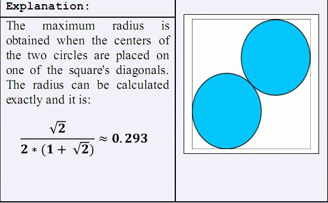

一个凸多边形有N个顶点。求最大的R，使得两个半径为R的圆，在互不相交的情况下能被放入到这个多边形中。
第一行一个整数N。接下来的N行，每行两个空格分开的整数Xi、Yi，表示凸多边形第i个顶点的坐标。
最大的半径R，并且保留到三位小数。与标准答案的误差在0.001以内的输出均被视为通过。 数据规模 3 ≤ N ≤ 50000 -10^7≤ xi ≤ 10^7 -10^7≤ yi ≤ 10^7 顶点的坐标按照逆时针顺序给出。 对于10%的数据有N = 3 对于40%的数据N ≤ 250
样例解释 